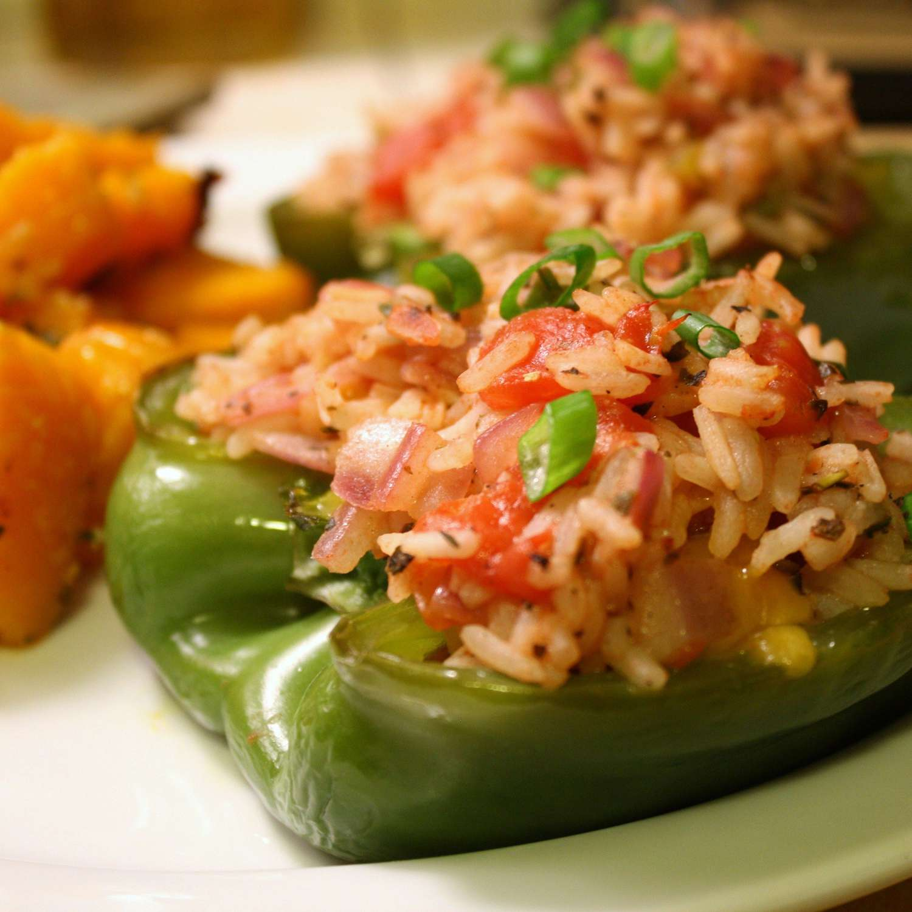

Stuffed Peppers

Description
These stuffed peppers are filled with fluffy arborio rice, tomatoes,
green onions, feta cheese, and then roasted to perfection. Great to portion
out individually, as a main meal or a starter. Ready in less than 40 minutes!
Ingredients
- 1 cup water
- 1/2 cup uncooked Arborio rice
- 2 green bell peppers, halved and seeded
- 1 tablespoon olive oil
- 2 green onions, thinly sliced
- 1 teaspoon dried basil
- 1 teaspoon Italian seasoning
- 1 teaspoon salt
- 1 pinch ground black pepper
- 1 tomato, diced
- 1/2 cup crumbled feta cheese
Steps
-
Preheat the oven to 400 degrees F (200 degrees C).
Lightly grease a baking sheet.
-
Bring water to a boil in a medium saucepan. Stir in rice.
Reduce heat, cover, and simmer until liquid is absorbed,
about 20 minutes. Remove from heat and set aside.
-
Meanwhile, place peppers cut-side down on the prepared baking
sheet. Roast in the preheated oven until tender and skin
begins to brown, 25 to 30 minutes.
-
While peppers are roasting, heat oil in a medium skillet over
medium-high heat. Cook and stir onions, basil, Italian seasoning,
salt, and pepper in oil for 2 to 3 minutes.
-
Stir in tomato and cook for 5 minutes. Spoon in cooked rice
and stir until heated through.
-
Remove from heat, mix in feta cheese, and spoon mixture into
pepper halves.
-
Return peppers to the oven until warmed through, about 5 minutes.
Home